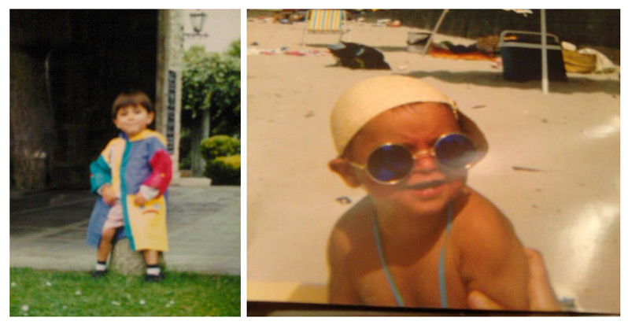

Today is Israel Alonso's birthday, and I was assigned to create a birthday celebration for him.
Here's the first thing you should know about Israel. He was born on this day many years ago.
Here's another thing that you should know about Israel. He was once a small child. For our latest Harvest Townhall, I asked the new Harvesters to send me baby pictures of themselves. Israel decided to send me not one, but two pictures:
And he said, "I'm not actually sure if the second one is me."
So Israel sent me a completely blurry picture of his baby self and a picture of some random kid he found on his computer. What does that say about Israel?
Here's something else about Israel we should be aware of. He's the youngest person at Harvest. Yup. He took that honor away from Evan and Joschka and Barry.
So today is Israel's birthday and on his birthday I'd like to do a few nice things for him. The first thing is this webpage. Sure it's just a webpage but I'm spending my [bleeping] time so you better appreciate it.
The second nice thing I'm doing is to say something nice about Israel:
Israel, you're a fine young man.
The third nice thing I did is to donate to his alma mater and name a bench after him.
Of course that's a joke. Why the hell would I ever do that for Israel? I barely know the kid. What I did instead, which is nicer, is to buy a sheep for a family, on behalf of Israel.
Just think, Israel: This sheep will provide warm clothing for some people and the family may be able to earn extra income from the sales of wool (don't worry about the sheep, the sheep will live). Think about that. Some less fortunate kid than you might be able to celebrate their birthday this year, because of the sheep I just got for you. You're welcome.
Oh right. One more nice thing I'm doing for you. How can I forget? This. People are supposed to grow up on their birthdays–so here's to a more mature Israel who knows better than to drunk text his co-workers.
Like,
Shawn